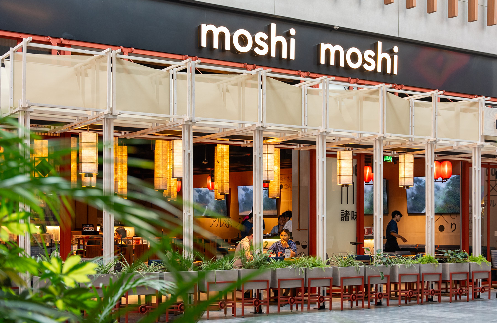
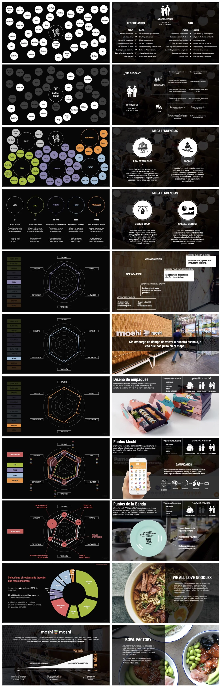

Estudio de mercado, rediseño de marca e identidad visual — el punto de partida de una relación que creció a todo Grupo MYT.

Moshi Moshi es el restaurante de cocina japonesa innovadora de Grupo MYT — uno de los grupos gastronómicos más activos de México. El reto no era solo rediseñar una marca: era entender un mercado en plena transformación y construir desde ahí una identidad que pudiera crecer con el negocio.
Moshi Moshi operaba en un segmento de cocina japonesa cada vez más competido y en crecimiento. El mercado había evolucionado, los consumidores también — pero la marca no había acompañado esa transformación. Antes de diseñar cualquier cosa, había que entender el terreno.
El primer paso fue un estudio de mercado profundo: análisis del segmento, identificación de tendencias nacionales, mapeo de competidores y detección de las oportunidades que nadie había reclamado todavía. Los hallazgos sorprendieron incluso al equipo interno del restaurante.
Con el estudio de mercado como base, desarrollamos la arquitectura y estrategia de marca de Moshi Moshi: posicionamiento, tono de voz, y un Core Benefit claro que diferenciara al restaurante dentro del grupo y frente a su competencia.
Desde ahí intervenimos en todos los puntos de contacto de la marca: rediseño de logo y sistema de identidad visual, nueva paleta de color, rediseño completo del menú — incluyendo la barra kaiten, el elemento más emblemático del restaurante — y estrategia de marketing digital.
El trabajo con Moshi Moshi fue el inicio de una relación más amplia con Grupo MYT, que derivó en proyectos para Cocina Abierta, La Crêpe Parisienne y la construcción de un área de marketing interna para el grupo.
Pasa el cursor sobre la imagen para explorarla.
